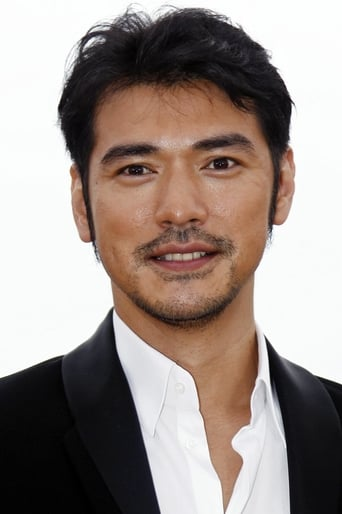
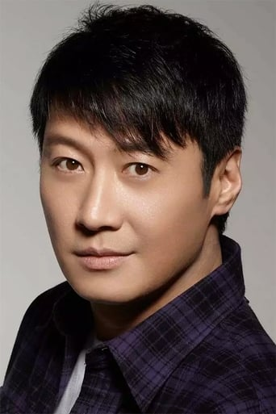
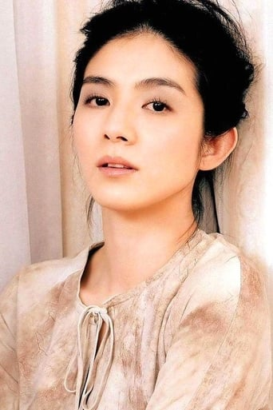
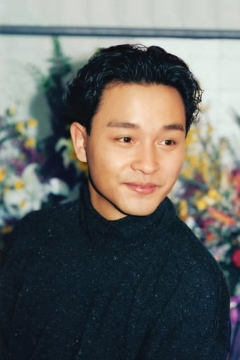
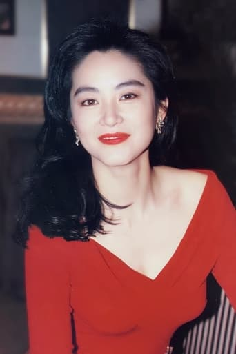

Tony Leung Chiu-wai (született: 1962. június 27.) hongkongi színész és énekes, aki Ázsia egyik legsikeresebb és nemzetközileg elismert színésze. A TVB "Kis Tigris" nevet viselte a "Négy Tigris" tagjaként, és számos nemzetközi színészi díjat nyert, köztük a Cannes-i Filmfesztivál legjobb férfi színész díját Wong Kar-wai *In the Mood for Love* című filmjében nyújtott alakításáért. ...Leungot a legjobb hongkongi színésznek tartják generációja egyik legkiemelkedőbb alakjaként. A CNN az "Ázsia 25 Legnagyobb Színésze" között említette.
Leung karrierje során számos klasszikus filmben szerepelt, és mind a hongkongi, mind a nemzetközi filmiparban nagy hatást gyakorolt.
Maggie Cheung
Maggie Cheung (született: 1964. szeptember 20.) hongkongi színésznő, aki a kínai mozi egyik legismertebb és legelismertebb alakja. Karrierjét a 1980-as évek végén kezdte, és hamarosan a hongkongi filmipar kiemelkedő színésznőjévé vált, több mint 50 filmben szerepelt. A nemzetközi filmvilágban is ismertté vált, főként Wong Kar-wai *In the Mood for Love* és *2046* című filmjeiben nyújtott emlékezetes alakításaival.... Cheung művészi karrierje során számos díjat nyert, és elismerték a különböző filmfesztiválokon. Miután elérte a csúcsot, a 2000-es évek elején visszavonult a filmipartól, de öröksége továbbra is meghatározó Hongkong és a nemzetközi mozi világában.

Takeshi Kaneshiro
Takeshi Kaneshiro (született: 1973. október 11.) japán-tajvani színész, énekes és modell, aki az ázsiai filmipar egyik legismertebb alakja. Kaneshiro a 1990-es évek végén és a 2000-es évek elején vált híressé olyan filmekkel, mint a *Chungking Express* és *Fallen Angels*, mindkettő Wong Kar-wai rendezésében, amelyekben elbűvölő és érzékeny alakításai révén szerzett elismerést....
Kaneshiro karrierje kiterjed a zenére is, de elsősorban filmjeiről ismert, melyekben sokszor komplex és mély karaktereket alakított. A hongkongi és japán filmiparban egyaránt népszerű, és az egyik legkeresettebb ázsiai sztárként tartják számon. A mai napig aktívan dolgozik a szórakoztatóiparban, és folyamatosan új projekteken dolgozik.

Leon Lai
Leon Lai (született: 1966. december 11.) hongkongi énekes és színész, aki a 1990-es években a Cantopop "Négy Mennyei Királya" között volt számon tartva. Lágy hangjáról és karizmatikus színpadi jelenlétéről ismert, és nagy hatással volt az ázsiai zenei színtérre, számos slágerlistás albummal és slágerrel.
Zenei karrierje mellett Lai elismerést szerzett színészként is, olyan filmekben szerepelt, mint a *Comrades: Almost a Love Story* és a *City of Glass*. ...Alakításai több díjat is hoztak neki, és megerősítették vezető férfi szereplőként való helyét a hongkongi filmiparban. Lai továbbra is aktívan szerepel és hozzájárul a szórakoztatóiparhoz, megőrizve helyét Hongkong egyik legismertebb és legkedveltebb sztárjaként.
Faye Wong
Faye Wong (született: 1969. augusztus 8.) kínai énekesnő és színésznő, aki széles körben az egyik legismertebb és legbefolyásosabb művész Ázsiában. Éteri hangjáról és egyedi stílusáról ismert, a 1990-es években vált híressé sorozatos sikeres albumai révén, és gyakran emlegetik "Ázsia Dívájának". Milliós példányszámban adott el lemezeket, és továbbra is az egyik legjobban fogyó kínai nyelvű énekesnő....
Zenei karrierje mellett Wong olyan filmekben is ismert, mint a *Chungking Express* és a *2046*, melyekben Wong Kar-wai rendezésében nyújtott visszafogott, de elismerésre méltó alakítást.
Miután a 2000-es évek közepén visszavonult a nyilvánosságtól, Wong visszafogott életet élt, de alkalmanként visszatért különleges koncertekre vagy projektekkel, tovább erősítve kulturális ikon státuszát.

Charlie Yeung
Charlie Yeung (született: 1974. május 23.) hongkongi színésznő, modell és énekesnő, aki a 1990-es és 2000-es évek elején vált ismertté. Olyan filmekben szerepelt, mint a *Comrades: Almost a Love Story* és a *The Eagle Shooting Heroes*, ahol elbűvölő és természetes jelenlétével szerzett elismerést. Yeung karrierje a zenére is kiterjedt, és a hongkongi szórakoztatóipar ismert alakjává vált. ...Wong Kar-wai *Fallen Angels* című filmjében nyújtott szereplése különösen emlékezetes, ami tovább erősítette hírnevét a nemzetközi filmvilágban. A 2000-es évek közepén egy időre visszavonult, de később különböző projektekben ismét feltűnt. Charlie Yeung továbbra is tisztelt és kedvelt személyiség a hongkongi mozi világában.
Karen Mok
Karen Mok (született: 1970. július 2.) hongkongi énekesnő és színésznő, aki mind a zenei, mind a filmes világban kiemelkedő karriert futott be. Több mint 20 éves pályafutása alatt számos sikeres albumot adott ki, és ismertté vált különleges hangszínéről és sokoldalú stílusáról. Mokot gyakran említik Ázsia egyik legismertebb és legkedveltebb énekesnőjeként....Színészként olyan filmekben szerepelt, mint a *Shaolin Soccer* és a *The Eagle Shooting Heroes*, ahol színes és változatos szerepekkel hívta fel magára a figyelmet. Karrierje során számos díjat nyert, és a mai napig aktívan dolgozik a szórakoztatóiparban, megőrizve helyét a hongkongi kultúrában és szórakoztatóiparban.

Leslie Cheung
Leslie Cheung (született: 1956. szeptember 12. - elhunyt: 2003. április 1.) hongkongi színész, énekes és a kínai popkultúra ikonikus alakja. A 1980-as és 1990-es években vált világhírűvé, és számos filmben szerepelt, például Wong Kar-wai *Happy Together* és *Days of Being Wild* című filmjeiben, ahol emlékezetes alakításai révén vált a nemzetközi filmvilág elismert személyiségévé....
Cheung nemcsak színészi, hanem énekesi karrierjében is óriási sikereket ért el. Az ő művészi sokoldalúsága és zenei tehetsége révén a popkultúra meghatározó szereplője lett, aki több generáció számára is meghatározó hatással volt. Tragikus halála után is évtizedekig megőrizte legendás státuszát, és máig tisztelt és kedvelt figura Hongkongban és világszerte.

Brigitte Lin Ching-hsia
Brigitte Lin Ching-hsia (született: 1954. november 3.) nyugdíjas tajvani színésznő és a kínai mozi legendás alakja, aki mind tajvani, mind hongkongi filmekben végzett munkájáról ismert. 1972-ben fedezték fel, és a Chiung Yao regényei alapján készült tajvani romantikus filmekben vált híressé, mielőtt áttért volna a hongkongi filmiparra, ahol az egyik legkeresettebb színésznővé vált, több mint 100 filmben szerepelt....Lin elismerést szerzett a nemi szerepeket meghazudtoló alakításaiért, mint például egy fiús lány szerepe a Peking Opera Blues-ban, egy férfiaként öltözködő nő a New Dragon Gate Inn-ben, és egy nemi átalakuláson átmenő karakter a Swordsman II-ben. Gyakran dolgozott együtt Tsui Hark rendezővel olyan ikonikus filmekben, mint a Peking Opera Blues és a Swordsman II.